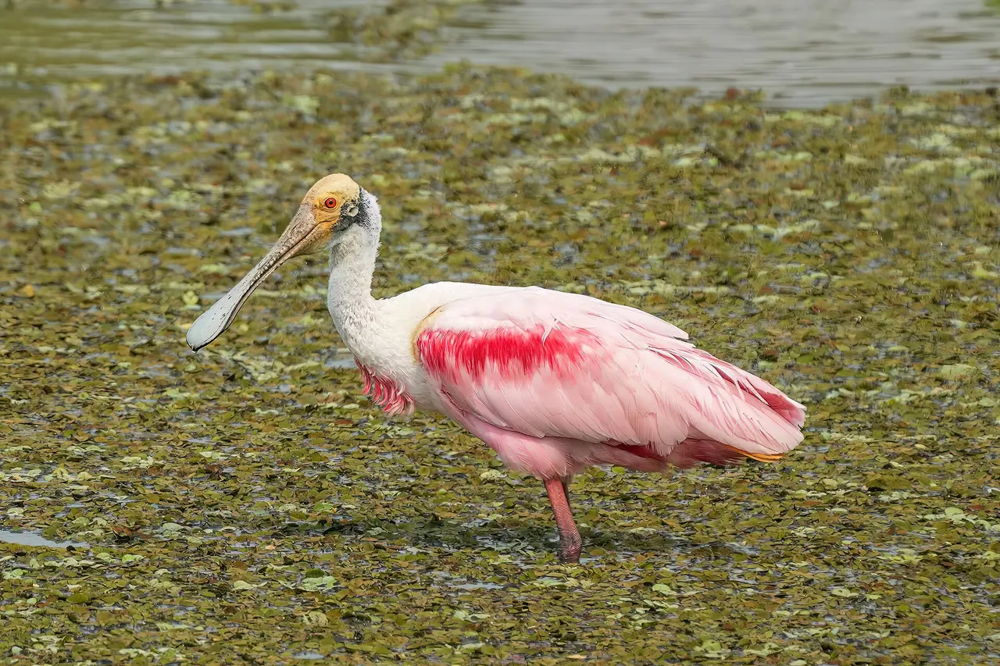
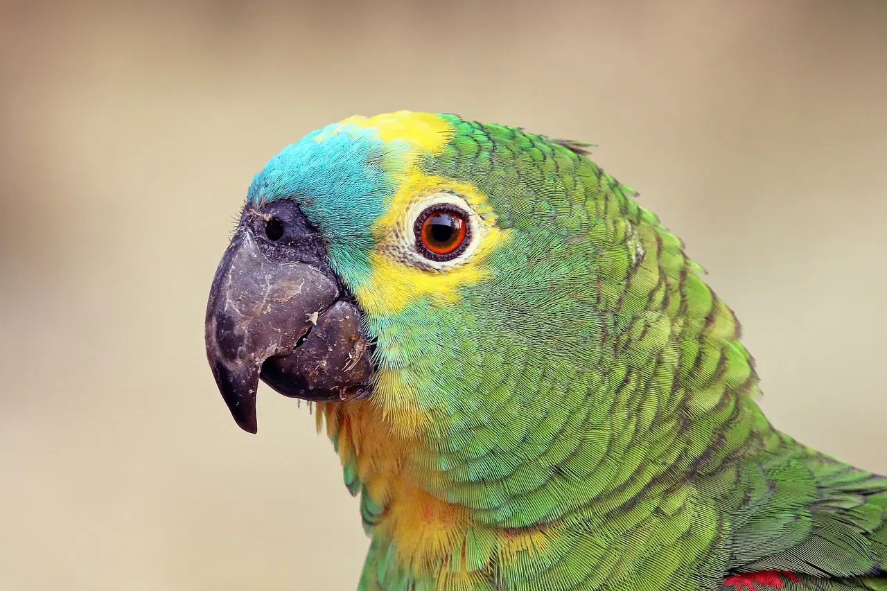
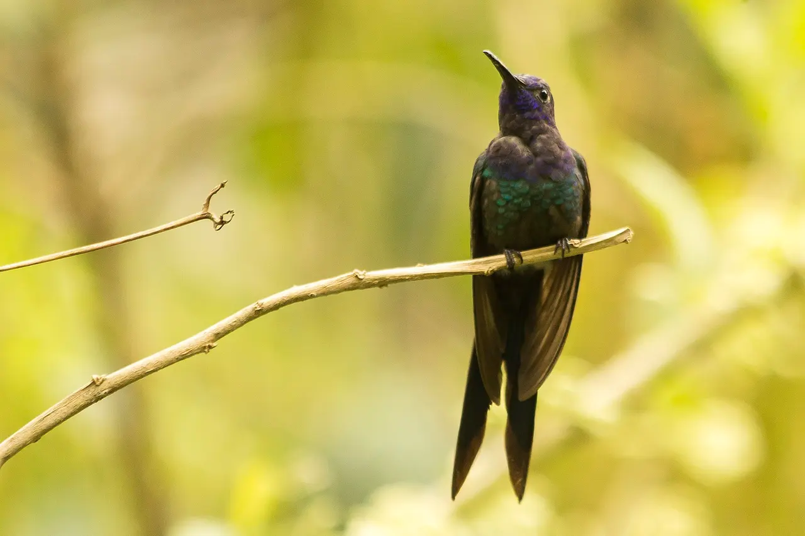
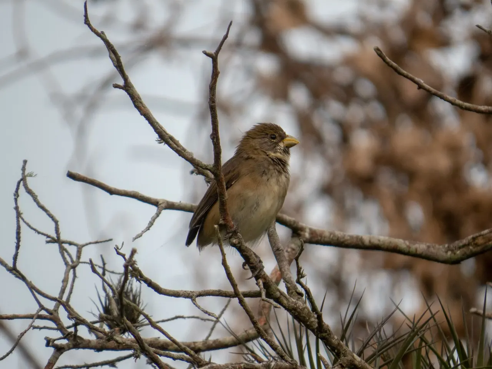
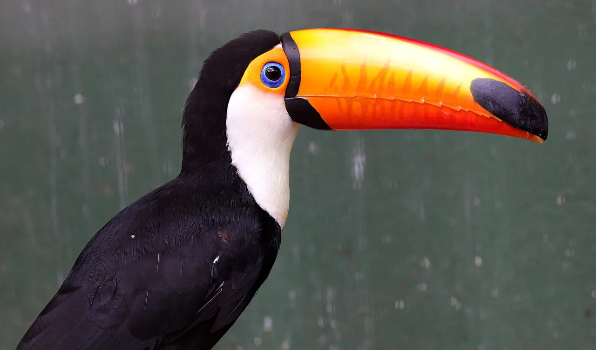

Módulo 4 Aula 17
Bico é ferramenta
A ave não tem mãos nem dentes. O bico faz o trabalho de ambos, e cada espécie tem o formato certo para o serviço.
- Por que o formato do bico depende da comida
- Sete bicos brasileiros e o que cada um faz
- Uma regra prática para ler qualquer bico

Ave da aula
Colhereiro Platalea ajaja
O bico e a comida
O bico é feito de osso, coberto por uma capa de queratina chamada . [1] Como a ave não tem mãos, ela usa o bico para pegar comida, construir ninho, se defender e cuidar das penas.
Por isso, o formato do bico costuma revelar a comida da espécie. Ao ver um bico novo, faça três perguntas: ele é curto ou longo? Grosso ou fino? E como é a ponta: gancho, cone, agulha ou colher?
Sete bicos, sete trabalhos
Olhe o bico em cada foto e escolha a função. Se errar, a explicação mostra o que observar. Os detalhes vêm destas fontes: colhereiro [2, 3], beija-flor [4], biguá [5], tucano [6] e formas de bico em geral [1, 11].
Colhereiro Platalea ajaja
Para que serve este bico?

Papagaio-verdadeiro Amazona aestiva
Para que serve este bico?

Beija-flor-tesoura Eupetomena macroura
Para que serve este bico?

Biguá Nannopterum brasilianus
Para que serve este bico?

Gavião-carijó Rupornis magnirostris
Para que serve este bico?

Coleirinho Sporophila caerulescens
Para que serve este bico?

Tucano-toco Ramphastos toco
Para que serve este bico?
Regra prática
Um resumo para levar a campo. Não é uma lei: há exceções, e muitas aves comem de tudo. Mas é um bom ponto de partida.
- Curto, grosso, em coneSementes pequenas, como as que comem os coleirinhos.
- Curto, forte, com ganchoRasgar carne (gaviões) ou quebrar frutos duros (papagaios). A largura e a curvatura mostram qual dos dois.
- Fino e longoAlcançar néctar ou insetos escondidos em frestas.
- Longo, com gancho fino na pontaPegar peixes.
- Achatado e largo na pontaVarrer a água rasa e captar pequenos animais.
- Grande e de estrutura leveComer frutos e pequenos animais, e ainda regular a temperatura, como faz o tucano.
Uma pergunta de Darwin
Nas ilhas Galápagos vivem cerca de 15 espécies de tentilhões muito parecidos entre si, mas com bicos de tamanhos e formas diferentes[10]: o bico fino do tentilhão-cantor-verde procura insetos, o bico grande e robusto do tentilhão-de-solo-grande quebra sementes duras, e o bico longo e pontudo do tentilhão-do-cacto pega sementes em frutos de cacto[10]. Foi isso que chamou a atenção de Charles Darwin. A pergunta que ele deixou é simples: e se o formato do bico for ajustado, ao longo de gerações, ao tipo de comida disponível?
Décadas depois, os pesquisadores Peter e Rosemary Grant acompanharam esses tentilhões e viram a ideia acontecer[8, 9]. Em uma seca, quando sobravam sementes duras, aves de bico maior sobreviveram mais e deixaram mais filhotes. Em outra seca, anos depois, com outro tipo de semente disponível, quem sobreviveu foram as aves de bico menor. O que decide é a comida que existe, e o bico funciona como uma ferramenta que a seleção natural vai afinando.
Palavras novas
Teste rápido
Sem nota. Se errar, tente de novo.
Um bico curto, grosso e em cone combina mais com qual dieta?
Por que o colhereiro tem a ponta do bico achatada?
O que o caso dos tentilhões de Galápagos sugere?
Referências e leitura complementar
Onde conferir o que foi dito nesta aula. Os números entre colchetes no texto levam a estas fontes. Os links abrem em outra aba.
- BeakEncyclopaedia Britannica · inglêsAnatomia e funções do bico, e como o formato se liga à alimentação.
- Roseate Spoonbills ForageBird Academy · Cornell Lab of Ornithology · inglêsComo o colhereiro procura comida com o bico na água rasa.
- Roseate Spoonbill Life HistoryAll About Birds · Cornell Lab of Ornithology · inglês · leitura complementarDieta e comportamento de forrageio do colhereiro.
- The hummingbird tongue is a fluid trap, not a capillary tubePNAS · inglês · leitura complementarEstudo científico sobre como a língua do beija-flor captura néctar.
- Neotropic Cormorant Life HistoryAll About Birds · Cornell Lab of Ornithology · inglêsDieta e pesca do biguá, ave de bico com gancho.
- Heat Exchange from the Toucan Bill Reveals a Controllable Vascular Thermal RadiatorScience (2009) · inglês · leitura complementarEstudo que mostrou o bico do tucano-toco funcionando como radiador de calor.
- ToucanEncyclopaedia Britannica · inglês · leitura complementarBiologia dos tucanos.
- Natural Selection and the Evolution of Darwin's FinchesHHMI BioInteractive · inglêsAtividade didática sobre o trabalho de Peter e Rosemary Grant com bicos de tentilhões.
- Intense Natural Selection in a Population of Darwin's Finches (Geospizinae) in the GalápagosScience · inglês · leitura complementarArtigo científico sobre seleção natural em tentilhões durante uma seca.
- Evolution teaching resource: spot the adaptations in Darwin's finchesNatural History Museum (Londres) · inglêsTentilhões de Darwin: cerca de 15 espécies, com bicos diferentes para dietas diferentes.
- Pecking OrderAudubon Magazine · inglês · leitura complementarReportagem sobre a diversidade de bicos.
Os endereços foram abertos e conferidos em 29/09/2026. Alguns sites de revistas científicas e de órgãos oficiais exigem verificação humana e não puderam ser testados por robô. Sites externos podem mudar ou sair do ar.
Para levar
Em três frases
- O bico é feito de osso coberto por queratina e funciona como mão, pinça, faca e peneira, dependendo da espécie.
- Para ler um bico, observe o comprimento, a largura e a forma da ponta: gancho, cone, agulha ou colher.
- Formas diferentes de bico se ajustam a comidas diferentes, e essa relação mostrou a Darwin como as espécies mudam.